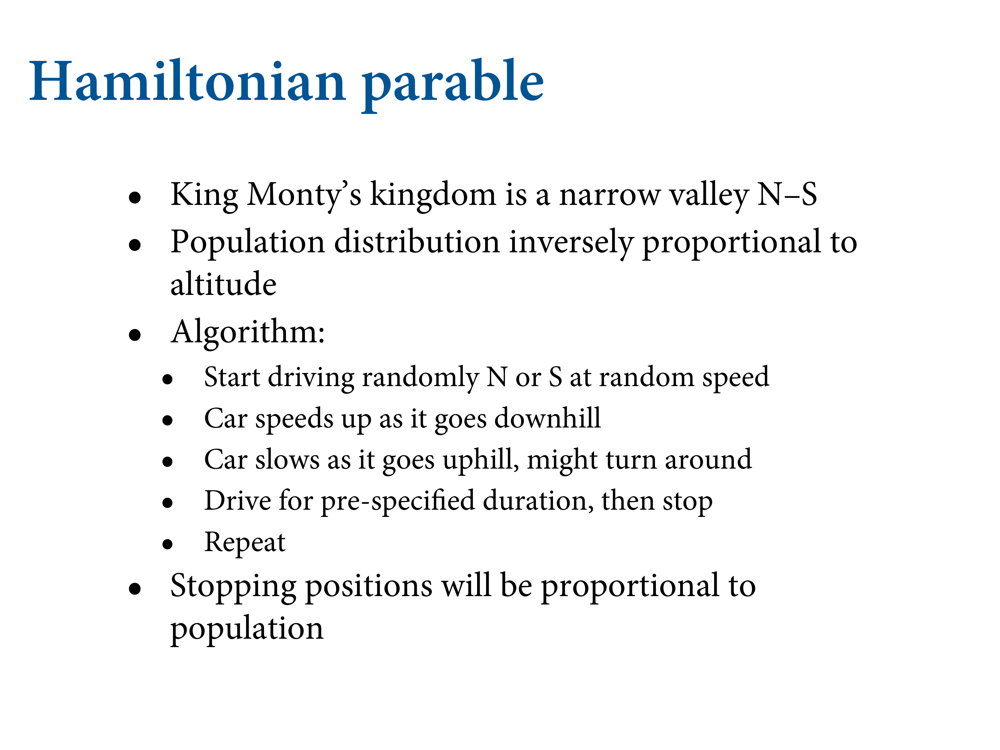

9.3 Hamiltonian Monte Carlo
It appears to be a quite general principle that, whenever there is a randomized way of doing something, then there is a nonrandomized way that delivers better performance but requires more thought. —E. T. Jaynes
![So what do we do instead? This is a different process entirely. No guess and check. Instead, it runs a physics simulation. We'll represent our parameter state as a coordinate in some high-dimensional space. In more dimensions, you have some hyperspace. You're a particle in this space in some position. Then we'll flick you, and it'll cruise on some surface - the posterior distribution - and record where you stop, then do it again. Because it follows the curvature, it always makes good proposals because it doesn't go into bad areas. So there's no more guessing and checking, all proposals are good proposals.](slides/L10/32.png)
So what do we do instead? This is a different process entirely. No guess and check. Instead, it runs a physics simulation. We’ll represent our parameter state as a coordinate in some high-dimensional space. In more dimensions, you have some hyperspace. You’re a particle in this space in some position. Then we’ll flick you, and it’ll cruise on some surface - the posterior distribution - and record where you stop, then do it again. Because it follows the curvature, it always makes good proposals because it doesn’t go into bad areas. So there’s no more guessing and checking, all proposals are good proposals.
9.3.1. Another parable
Continuous urban smear. More living in the bottom. How to use this? Hamiltonian.


In the book, here’s a simulation. Time on the horizontal. It’s Gaussian. You take the log of a Gaussian and it’s a parabola. So you start in the middle. But you need to know the contour.

Roll the marble and periodically stop and record the position. Over time you get position samples that are proportional to the shape, as if there is more probability in the bottom.


Again, 2D Gaussian hill. It’s a bowl now. Flick the simulation and do the pass. Always ends up inside the bowl. What stops you from getting into the silly spots. Better living through physics.
Because each proposal is accepted, you need many many fewer. So a lot of efficiency. Using the code in the chapter, we get tours. Start with x on the left, and it rolls down the valley. Eventually we stop, then flick it again. High acceptance rate, but the sequential auto-correlation is very low.


Hamiltonian MC does really well with the donut. It knows the curvature. Tours the whole thing, and you don’t get stuck. If you have 27K parameters, that’s really handy.

You need to put in momentum variables now. You need to choose the mass. The system has energy, which is how to check that it’s working. If energy is not conserved, the simulation stops working. With Metropolis, you won’t know. But this breaks dramatically. Also need gradients - the log posterior at a particular point.
Not that complicated, so tour through it.
# U needs to return neg-log-probability
U <- function( q , a=0 , b=1 , k=0 , d=1 ) {
muy <- q[1]
mux <- q[2]
U <- sum( dnorm(y,muy,1,log=TRUE) ) + sum( dnorm(x,mux,1,log=TRUE) ) +
dnorm(muy,a,b,log=TRUE) + dnorm(mux,k,d,log=TRUE)
return( -U )
}# gradient function
# need vector of partial derivatives of U with respect to vector q
U_gradient <- function( q , a=0 , b=1 , k=0 , d=1 ) {
muy <- q[1]
mux <- q[2]
G1 <- sum( y - muy ) + (a - muy)/b^2 #dU/dmuy
G2 <- sum( x - mux ) + (k - mux)/d^2 #dU/dmux
return( c( -G1 , -G2 ) ) # negative bc energy is neg-log-prob
}
# test data
set.seed(7)
y <- rnorm(50)
x <- rnorm(50)
x <- as.numeric(scale(x))
y <- as.numeric(scale(y))library(shape) # for fancy arrows
Q <- list()
Q$q <- c(-0.1,0.2)
pr <- 0.3
plot( NULL , ylab="muy" , xlab="mux" , xlim=c(-pr,pr) , ylim=c(-pr,pr) )
step <- 0.03
L <- 11 # 0.03/28 for U-turns — 11 for working example
n_samples <- 4
path_col <- rethinking::col.alpha("black",0.5)
points( Q$q[1] , Q$q[2] , pch=4 , col="black" )
for ( i in 1:n_samples ) {
Q <- rethinking::HMC2( U , U_gradient , step , L , Q$q )
if ( n_samples < 10 ) {
for ( j in 1:L ) {
K0 <- sum(Q$ptraj[j,]^2)/2 # kinetic energy
lines( Q$traj[j:(j+1),1] , Q$traj[j:(j+1),2] , col=path_col , lwd=1+2*K0 )
}
points( Q$traj[1:L+1,] , pch=16 , col="white" , cex=0.35 )
Arrows( Q$traj[L,1] , Q$traj[L,2] , Q$traj[L+1,1] , Q$traj[L+1,2] ,
arr.length=0.35 , arr.adj = 0.7 )
text( Q$traj[L+1,1] , Q$traj[L+1,2] , i , cex=0.8 , pos=4 , offset=0.4 )
}
points( Q$traj[L+1,1] , Q$traj[L+1,2] , pch=ifelse( Q$accept==1 , 16 , 1 ) ,
col=ifelse( abs(Q$dH)>0.1 , "red" , "black" ) )
}
Let’s tour through the HMC2 function in rethinking:
HMC2 <- function (U, grad_U, epsilon, L, current_q) {
q = current_q
p = rnorm(length(q),0,1) # random flick - p is momentum.
current_p = p
# Make a half step for momentum at the beginning
p = p - epsilon * grad_U(q) / 2
# initialize bookkeeping - saves trajectory
qtraj <- matrix(NA,nrow=L+1,ncol=length(q))
ptraj <- qtraj
qtraj[1,] <- current_q
ptraj[1,] <- p
}L steps are taken, using the gradient to compute a linear appoximation of the log-posterior surface at each point.
# Alternate full steps for position and momentum
for ( i in 1:L ) {
q = q + epsilon * p # Full step for the position
# Make a full step for the momentum, except at end of trajectory
if ( i!=L ) {
p = p - epsilon * grad_U(q)
ptraj[i+1,] <- p
}
qtraj[i+1,] <- q
} # Make a half step for momentum at the end
p = p - epsilon * grad_U(q) / 2
ptraj[L+1,] <- p
# Negate momentum at end of trajectory to make the proposal symmetric
p = -p
# Evaluate potential and kinetic energies at start and end of trajectory
current_U = U(current_q)
current_K = sum(current_p^2) / 2
proposed_U = U(q)
proposed_K = sum(p^2) / 2
# Accept or reject the state at end of trajectory, returning either
# the position at the end of the trajectory or the initial position
accept <- 0
if (runif(1) < exp(current_U-proposed_U+current_K-proposed_K)) {
new_q <- q # accept
accept <- 1
} else new_q <- current_q # reject
return(list( q=new_q, traj=qtraj, ptraj=ptraj, accept=accept ))
}![Problem is that there's stuff to pick, namely the step size (the length of time we run a segment). You want basically the biggest step size, but if you make it too big, you can overshoot the shape. THen you need to choose the number of steps you'll take in each trajectory. If you choose bad values for those, you'll have a bad time. In general it's not as bad as it gets in a 2D Gaussian. Since it's a parabolic bowl, you can get these parabolic loops. In the long run it'll still work, but it's super inefficient. How do you fix it? Choose good values for the tuning parameters, which is annoying.](slides/L10/44.png)
Problem is that there’s stuff to pick, namely the step size (the length of time we run a segment). You want basically the biggest step size, but if you make it too big, you can overshoot the shape. THen you need to choose the number of steps you’ll take in each trajectory. If you choose bad values for those, you’ll have a bad time. In general it’s not as bad as it gets in a 2D Gaussian. Since it’s a parabolic bowl, you can get these parabolic loops. In the long run it’ll still work, but it’s super inefficient. How do you fix it? Choose good values for the tuning parameters, which is annoying.


Here’s the simulation where it resembles an Ouroboros. Since you don’t know the distribution, it’s hard to say what the best tuning parameters are.

Stan does two things: 1) Warm up phase, then maximises the step size. 2) Runs the NUTS2 algorithm.

Here’s NUTS. It runs the simulation in both directions in time. It imagines a simulation that loops back on itself, and runs it backwards from teh starting point, and goes backdwards at the same time, but when it sees itself turning around, it stops. This means it figures out a good number of leapfrog steps for each trajectory. So you don’t need to make a bunch of decisions.
One of the mathematicians working with Metropolis. Built mechnical MCMC simulators. Also did important work in biology. Could run Stan on anything you like.

There are still problems. If you have multiple separated hills, like in factored analytical models, the wait between hills can be long indeed. In my experience you handle this by changing the geometry of the model. We get these with item-response theory models.
SWant you to recognise a bad chain when you see it.